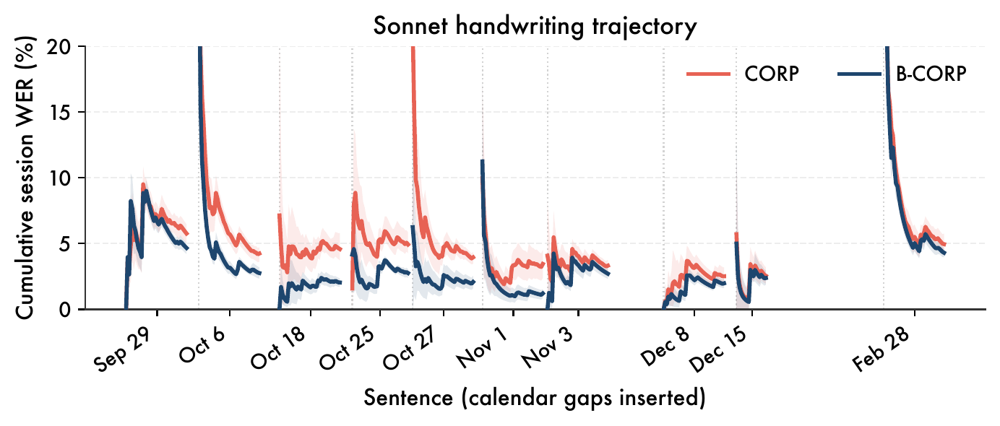
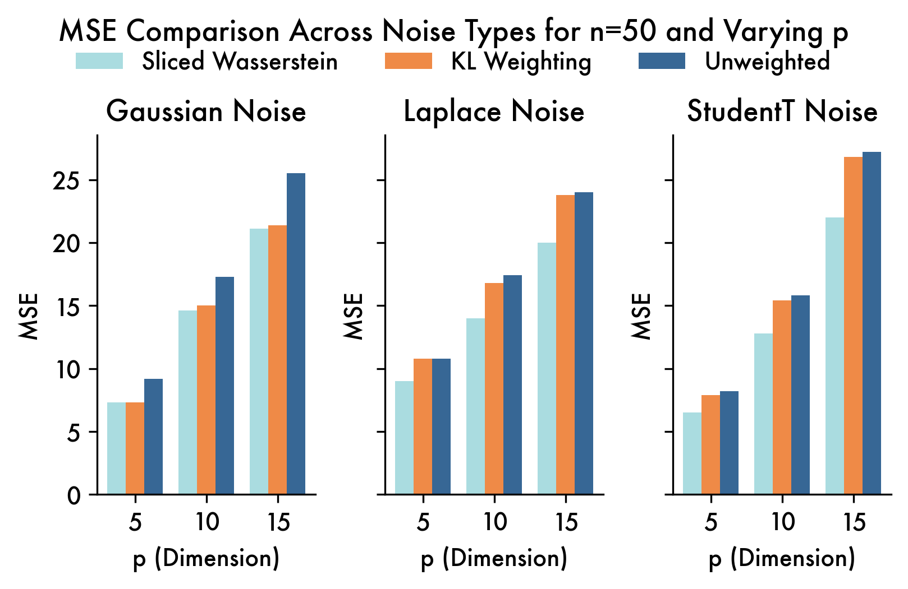
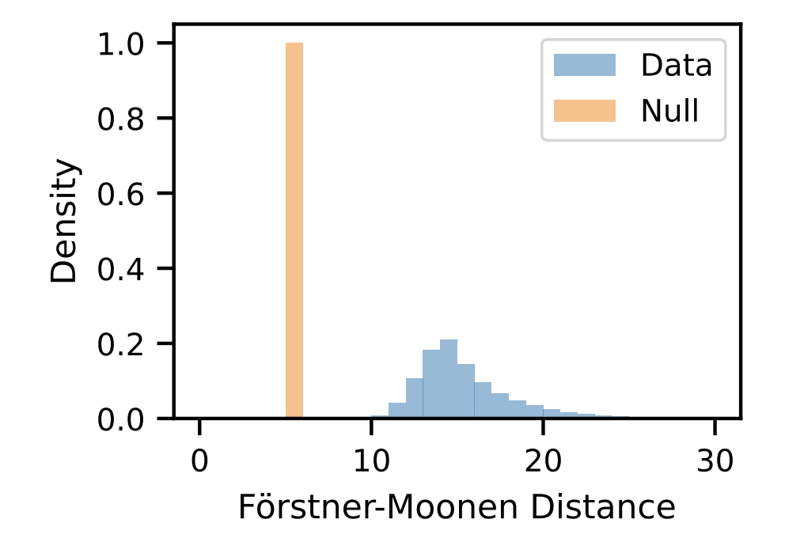
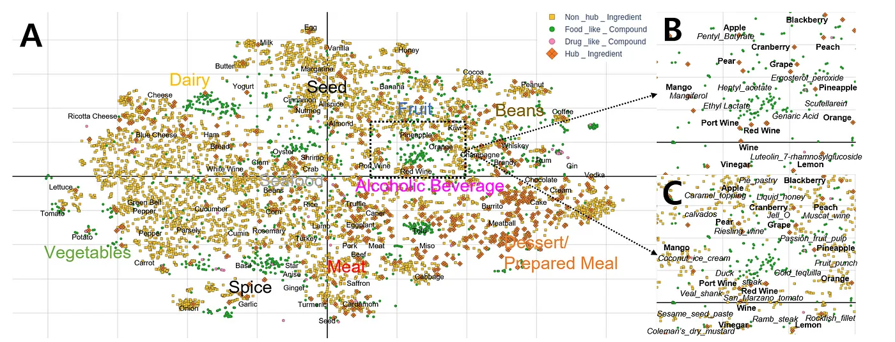

Research
RatGPT: A Generative Model of Social Behavior in Interacting Rats
Understanding the neurobiology of social behavior requires quantitative models of behavior. Advances in computer vision now enable large-scale collection of multi-animal pose data, but extracting interaction dynamics remains challenging. We present RatGPT, a self-supervised generative framework that learns joint movement distributions without manual behavior labels. A causal transformer with a flow-matching head generates trajectories of interacting rats with substantially greater realism and over longer time horizons than previous methods made possible. The model is trained on over a hundred hours of rat interaction (23-keypoint 3D pose at 50 Hz) across three autism-associated genetic lines, and its generated movements are nearly indistinguishable from real data by the human eye. Unlike HMM baselines, which failed to generate realistic rollouts even with twice as much training data, RatGPT continued to improve as the training dataset increased. In a classifier two-sample test, HMM generations were identified 99% of the time, while RatGPT generations were identified only 58% of the time, barely above the chance level of 50%. Beyond generation, the model provides well-calibrated likelihoods for each conditional distribution, so we can design experiments and metrics to draw conclusions about social behavior between animals, promising to advance our understanding of neurobiology. This framework is general enough to extract useful signal from any large enough collection of multi-agent video interactions.
Collaborators: Cole Citrenbaum, Max Weinberg, Lily Cao, Aditi Jha, Ugne Klibaite, Ann Kennedy, Bence Ölveczky, and Scott Linderman
B-CORP: Online Bayesian Recalibration of Brain–Computer Interfaces with Language Model Potentials

Brain–computer interfaces (BCIs) must continually adapt as neural signals drift, yet labeled calibration data is expensive to collect at time of use. Recent systems address this challenge by updating neural decoders using language-model–pseudo-labels, but they treat the pseudo-label as ground truth. We reinterpret recalibration as approximate Bayesian filtering: the decoder parameters are the latent states, and language models provide observations in the form of unnormalized potentials. Guided by this analysis, we introduce B-CORP (Bayesian Continual Online Recalibration with Pseudo-labels). B-CORP replaces hard pseudo-labels with a soft top-K marginalization, increases the number of iterations in the coordinate ascent on the joint likelihood, and models parameter drift with a prior on latent dynamics. Across synthetic drifting regression tasks and real BCI benchmarks, including handwriting and speech BCI datasets, B-CORP attains word error rates consistently under 3% on a difficult handwriting BCI dataset. B-CORP improves almost 30% versus the state-of-the-art, while retaining performance even with poor pseudo-labels where naive methods fail. More broadly, our approach connects pseudo-label recalibration with online Bayesian inference, providing a principled foundation for problems requiring long-term recalibration with access to black box predictive models, such as LLMs, for use as strong priors over the labels.
Neural Information Processing Systems (NeurIPS), 2026
Collaborators: Scott Linderman
[NeurIPS]
Robustness via Sliced Wasserstein Pooling

Since much of the covariate shift that occurs in brain computer interface data is due to movement of the electrode array, we propose a method for training robust neural networks by aligning the spaces of the covariates observed on a particular day according to their Sliced Wasserstein distance. The method can be calculated efficiently and improves performance on real world intracortical brain computer interface data.
Neural Information Processing Systems (NeurIPS) Workshop on Data on the Brain and Mind, 2025
Collaborators: Scott Linderman
Bayesian Nonparametric Perspective on Mahalanobis Distance for Out of Distribution Detection

Bayesian nonparametric methods are naturally suited to the problem of out-of-distribution (OOD) detection. However, these techniques have largely been eschewed in favor of simpler methods based on distances between pre-trained or learned embeddings of data points. Here we show a formal relationship between Bayesian nonparametric models and the relative Mahalanobis distance score (RMDS), a commonly used method for OOD detection. Building on this connection, we propose Bayesian nonparametric mixture models with hierarchical priors that generalize the RMDS. We evaluate these models on the OpenOOD detection benchmark and show that Bayesian nonparametric methods can improve upon existing OOD methods, especially in regimes where training classes differ in their covariance structure and where there are relatively few data points per class.
Transactions on Machine Learning Research (TMLR), 2026
Collaborators: Randolph Linderman, Yiran Chen, and Scott Linderman
Recipe Recommender with Graph Neural Networks

Graph neural networks (GNNs) have become a popular approach for modeling graph-structured data in recent years. By treating the flavorgraph as a network and using GNNs, we can leverage the rich flavor information to predict new edges between ingredients, indicating potential flavor pairings or substitutions. This project was featured by the CS224W team as a best project in a class of over 500 students.
Collaborators: Will Shabecoff and Kushagra Gupta